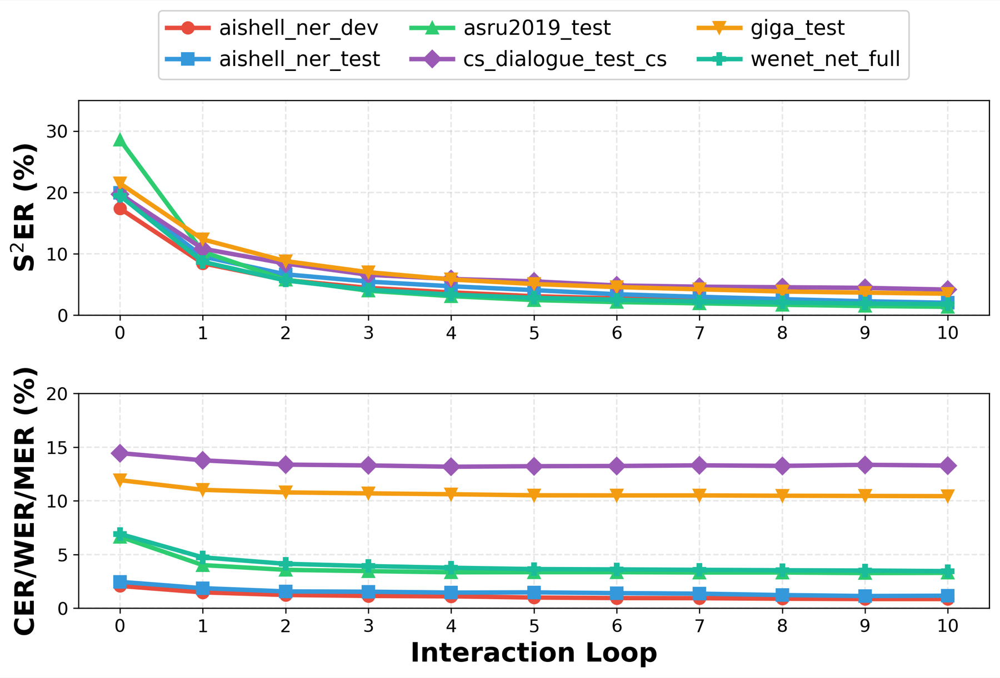

Automatic speech recognition (ASR) is a core component of human-computer interaction and an increasingly important front-end for LLM-based assistants and agents. However, most current ASR systems still follow a single-pass paradigm, which is poorly aligned with human communication, where misunderstandings are resolved through iterative clarification and refinement. This mismatch makes it difficult to correct meaning-critical errors once they occur. Meanwhile, token-level metrics such as WER or CER cannot adequately reflect such a problem. To address these limitations, we formulate Interactive ASR as a multi-turn refinement task and propose Agentic ASR, a closed-loop framework that combines a single-pass ASR front-end with semantic correction, intent routing, and reasoning-based editing. We further introduce the Sentence-level Semantic Error Rate (S2ER), an LLM-based semantic evaluation metric, together with an Interactive Simulation System for scalable and reproducible benchmarking. Experiments on multilingual, named-entity-intensive, and code-switching benchmarks show that iterative interaction consistently reduces semantic errors, with much larger gains in S2ER than in conventional token-level metrics. Human-AI alignment and ablation studies further validate the reliability of the semantic judge and the robustness of the proposed framework.

Agentic ASR framework. At turn t, an ASR front-end first produces a hypothesis Ht from user speech input It. An LLM module then performs semantic correction and intent routing into three intent types: confirmation, new input, and correction. For correction intents, a structured Locate--Reason--Modify pipeline identifies the editable span, infers the intended edit from instruction and history, and applies the edit to update the transcription state.

Interactive Simulation System (ISS) for automatic multi-round evaluation of Interactive ASR. At each round, the S2ER Judger evaluates semantic equivalence between the current transcription and ground truth; if equivalence is not achieved, the User Simulator produces corrective spoken feedback for the next round.
| Benchmark | Loop 0 | Loop 1 | Loop 3 | Loop 10 |
|---|---|---|---|---|
| GigaSpeech Test | 21.47% | 12.35% | 7.00% | 3.49% |
| WenetSpeech Test_Net | 19.46% | 8.69% | 4.15% | 1.80% |
| Benchmark | Loop 0 | Loop 1 | Loop 3 | Loop 10 |
|---|---|---|---|---|
| AISHELL-NER Dev† | 17.38% | 8.45% | 4.45% | 1.97% |
| AISHELL-NER Test† | 19.91% | 9.55% | 5.47% | 2.02% |
| Benchmark | Loop 0 | Loop 1 | Loop 3 | Loop 10 |
|---|---|---|---|---|
| CS-Dialogue Test† | 19.73% | 10.83% | 6.58% | 4.16% |
| ASRU2019 Test | 28.57% | 10.32% | 3.98% | 1.36% |

Performance trends of the proposed Agentic ASR framework from Loop 0 to Loop 10. The upper panel shows S2ER across all benchmarks, while the lower panel reports conventional error rates (WER/CER/MER). S2ER decreases consistently with more interaction, with the largest gains typically observed in the first few loops, whereas conventional token-level metrics improve more gradually.